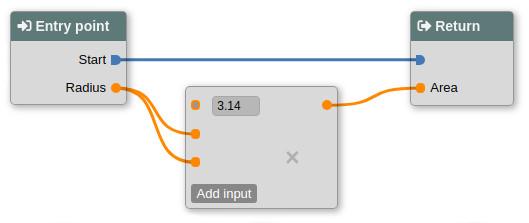

JLogic

Overview
JLogic is a tool for creating functions and programs using a graphic interface instead of writing code in a programming language (this is called "visual scripting").
With JLogic you can visually edit, test and deploy pipelines, called "blueprints", for batch jobs and HTTP requests.
Key features
Visual editing
RESTful APIs
HTTPS and authentication with roles
Administration tools
Expandable by plugins
Export JAR files with all dependencies
Requirements
- JDK to create, compile and execute blueprints
- JRE to only execute blueprints
Getting started
Download and unzip the package. Then start the server:
tar -vxf jlogic-0.0.1.tar.xz
cd jlogic-0.0.1
bin/jlogic
Go to
https://localhost:8443/home with your browser.
Log in with admin/admin default credentials.
See
labs to take a tour.
License
GNU General Public License version 3
Copyright © 2020 Fabio Leone